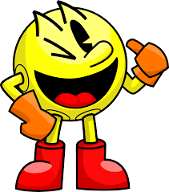

Why is Pac-Man so Fun?
Pac-Man is a classic arcade game that has captured the hearts of players for decades.
Its simplicity, challenging gameplay, and charming characters make it a timeless favorite.
The thrill of navigating Pac-Man through mazes while being pursued by ghosts adds to the excitement.
Who created Pac-man?
Pac-Man was created by Toru Iwatani, a Japanese video game designer.
He developed the game for Namco and released it in 1980.
Toru Iwatani's inspiration for Pac-Man came from the idea of creating a game that would appeal to both men and women, and it became an iconic masterpiece.
How to play Pac-man?
Playing Pac-Man is easy and addictive.
You control Pac-Man, a yellow circular character, as he moves through mazes to eat dots and fruits while avoiding the colorful ghosts.
Your goal is to clear the maze by eating all the dots and fruits without getting caught by the ghosts. Each ghost has its unique behavior, adding strategy to the game.
Collect power pellets to turn the tables and eat the ghosts for extra points. Enjoy the classic gaming experience!